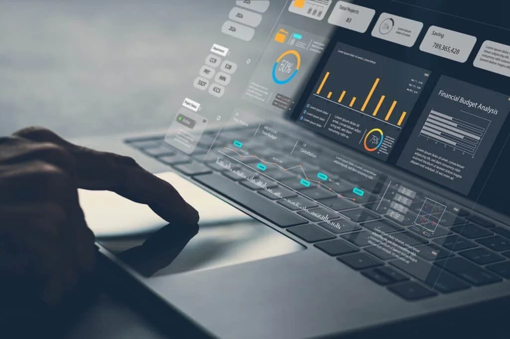
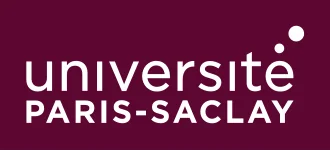
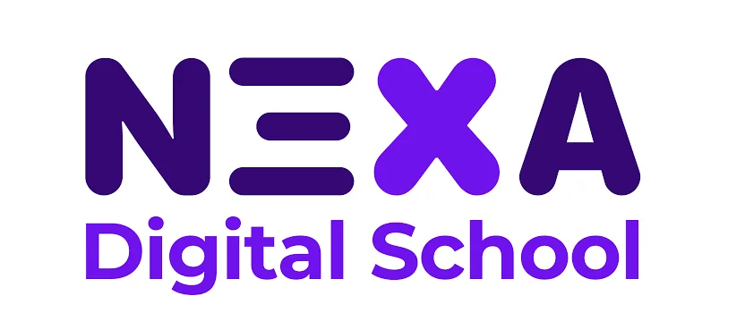

Analyse & préparation
Python, Pandas, NumPy, SQL, Excel, Power Query, nettoyage, rapprochement et contrôle qualité.
Je suis Yvette Fabiola Bayi Essoka, étudiante en Master à l’Université Paris-Saclay. Je travaille sur la qualité des données, l’automatisation des analyses et la création de tableaux de bord utiles aux équipes métier.
01 / Profil
Mon parcours combine analyse de données, développement informatique et compréhension des besoins métier. J’ai travaillé sur des sujets de reporting, de nettoyage de bases, d’analyse commerciale et d’automatisation, notamment dans les secteurs pharmaceutique et institutionnel.
Des données fiables, des indicateurs compréhensibles et des outils conçus pour faciliter la prise de décision.
Voir mon LinkedIn ↗02 / Expertise

Python, Pandas, NumPy, SQL, Excel, Power Query, nettoyage, rapprochement et contrôle qualité.
Power BI, DAX, tableaux de bord, KPI, reporting, Matplotlib et restitution métier.
Scikit-learn, machine learning, clustering K-Means, Flask, Git, GitHub, HTML, CSS et JavaScript.
03 / Parcours
CDD à temps partiel · Paris · Hybride
Préparation des données avec Python, SQL et Excel ; tableaux de bord Power BI et suivi des KPI ; analyse des ventes pharmaceutiques, des stocks et des approvisionnements ; automatisation des reportings avec Python et Power Query.
Stage · Paris
Collecte, nettoyage et structuration de données ; tableaux de bord Excel et Power BI ; analyse de tendances et suivi d’indicateurs de performance pour les équipes métier.
Stage · À distance · Douala
Fiabilisation de bases Excel, automatisation Python, suppression de doublons, harmonisation des champs et contrôles de cohérence avant reporting.
Stage · Sur site
Structuration de données techniques, analyse d’anomalies, mise à jour de bases et tableaux de suivi opérationnels.
Stage · Sur site
Participation à la mise en place d’API RESTful pour faciliter la communication entre systèmes.
04 / Réalisations
Des travaux de développement, d’analyse et de modélisation. Les fonctionnalités en cours de conception sont explicitement signalées.
Projet de plateforme web de création et de gestion d’enquêtes : questionnaires, collecte des réponses, import/export Excel et tableaux de bord. Contrôles qualité, détection des doublons et assistance IA font partie des évolutions envisagées.
Analyse des ventes de janvier à mai 2026 et création d’indicateurs pour suivre le chiffre d’affaires et les performances commerciales dans trois pays.
Étude de la récence, de la fréquence et du montant des achats pour segmenter des profils clients et interpréter les groupes obtenus.
Expérimentation de réseaux de neurones multicouches (MLP) sur les jeux de données MNIST et CIFAR-10, avec évaluation des performances.
05 / Formation

Université Paris-Saclay · Analyse de données, statistiques, Python, machine learning et visualisation.

Nexa Digital School · Python, SQL, Power BI, projets Data et analyse décisionnelle.
Institut Universitaire de la Côte (IUC) · Cameroun.
06 / Échangeons
Disponible pour échanger sur les opportunités en Data Analytics, Business Intelligence et Data Science.
Paris, France · 06 51 37 59 60 · yvetteessoka@gmail.com